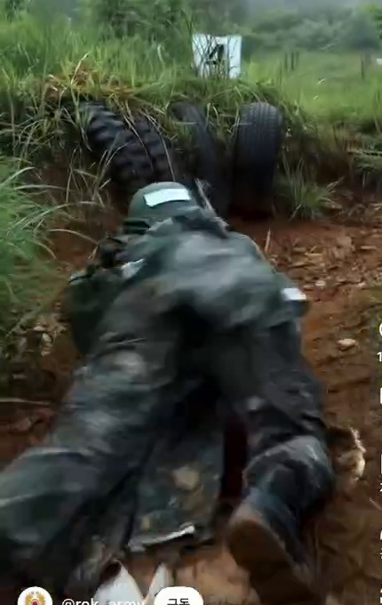
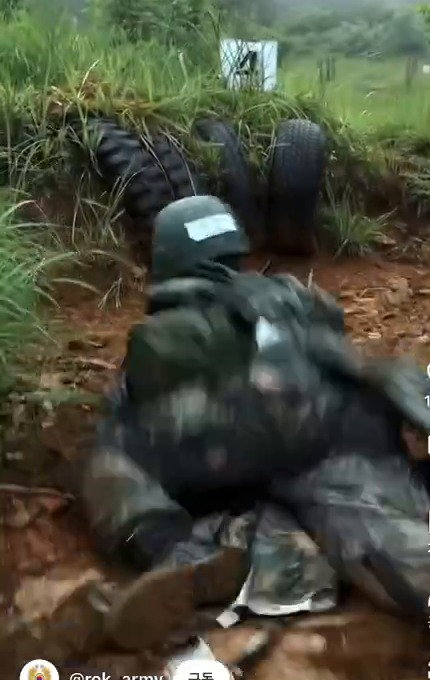
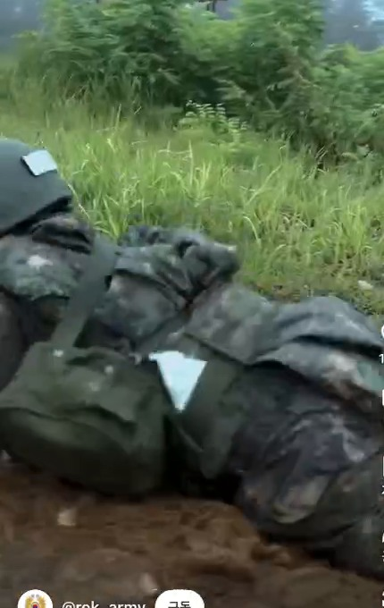
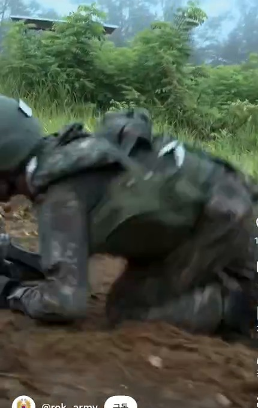
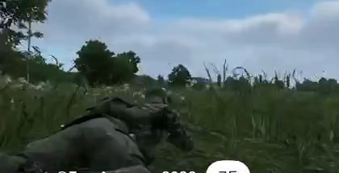
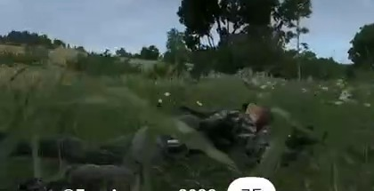
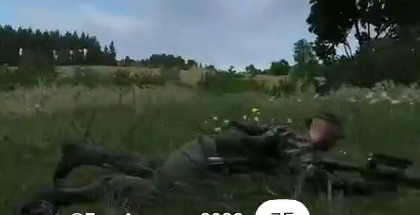
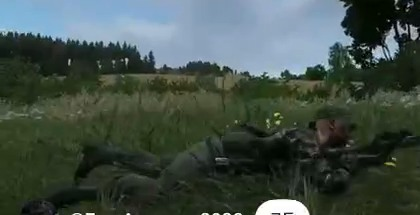

사용자 첨부 영상을 FFmpeg로 디코딩했습니다. 아래 시각은 원본 파일의 프레젠테이션 타임스탬프입니다. 전체 영상을 재배포하지 않고 검토에 사용한 일부 크롭만 표시합니다.
관찰: 바깥으로 회수하는 무릎에 따라 골반이 회전하고, 전완 지지 위로 몸통이 이동하며, 가슴·어깨와 골반이 약간 다른 시점에 움직입니다. 압축과 가려짐 때문에 정확한 관절 각도·접촉력·속도는 측정하지 않았습니다. 이 프레임은 우리 모델의 동작을 평가하기 위한 참고이며, 원본 게임 애니메이션 데이터를 복사하지 않았습니다.
실제 훈련 화면 출처 표시: @rok_army. 게임 비교 화면 출처 표시: @ZeroAccuracy2026. 파일은 사용자가 제공했습니다.
원본 / 수정 포복 비교로 돌아가기2-crawl_reference_small.mov




1-crawl_reference_second_small.mov



